Under the great patronage of his majesty the king Mohammed VI
Swift cooking course
Making a Cake ... Pattern
D. Plaindoux | Devoxx Morocco
Dependency injection with Swift
- Calling a constructor and/or a setter
- Container with registration capabilities
Classical and "agnostic" approach ...
Dependency injection alternative?
Specific design pattern applied
using the Swift language expressivness

type MySelf = Freelance & ComputerScientist
🍯
The ingredients
Quick language overview
Objet-Oriented Programming Language
|
Class
OO programming
|
|
Structure
OO & Immutability
|
Enumeration
OO & Patterns
|
|
Protocol
Specification
|
Protocol
- Specification: methods, values ...
- Extensions
Protocol specification
protocol User {
var name : String { get } // Variable Specification
}
protocol UserRepository {
func users() -> [User] // Methods specification
func search(byName name:String) -> User? // Returns an optional !
}
Protocol extension
extension UserRepository {
func search(byName name:String) -> User? {
return self.users().filter{ $0.name == name }.first // self ≡ Java this
}
}
Protocol and inheritance
protocol Contact {
func send(message: String);
}
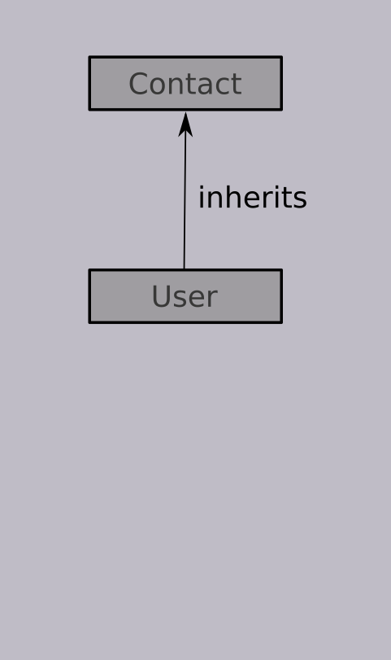protocol User : Contact {
var name: String { get }
}
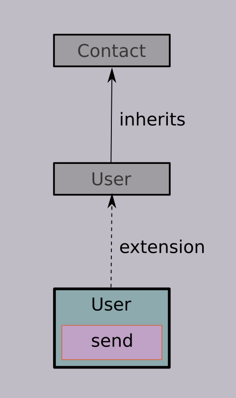extension User {
func send(message: String) { ... }
}
A priori ...
Protocol extension and ... inheritance ?
protocol Contact {
func send(message: String);
}
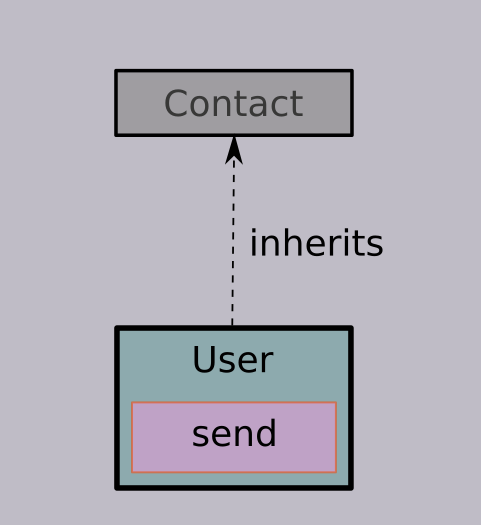extension User : Contact {
func send(message: String) { ... }
}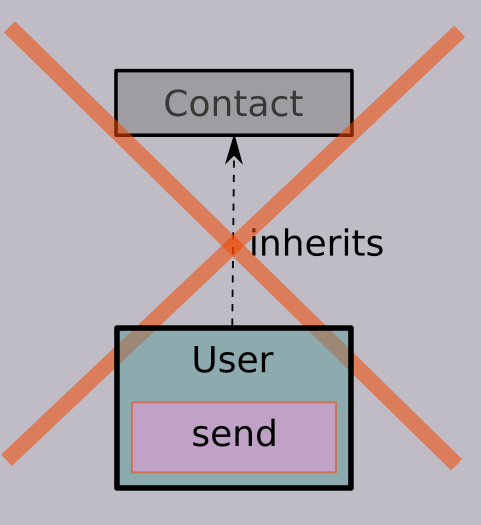
Extension of protocol User cannot have an inheritance clause
extension and inheritance
Only available for Class, Struct and Enum
😳
The Self type
"Bounded Polymorphism for Extensible Objects"
self : Self
class Counter {
var value:Int
init(_ value:Int = 0) {
self.value = value
}
func increment() -> Self {
self.value += 1
return self // Mutable 😱
}
}
a new ... Self
class Counter {
let value:Int
func increment() -> Self {
return type(of:self).init(self.value + 1) // Immutable 😎
}
required init(_ value:Int = 0) {
self.value = value
}
}
Protocol strikes back
Capability to constraint Self type
Inheritance vs. Composition
Protocol implementation and Self constraints
protocol Contact {
func send(message: String);
}
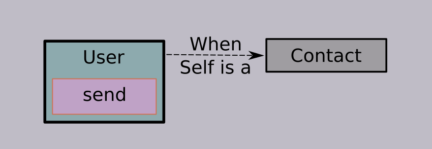extension User where Self:Contact {
func send(message: String) {
print("Say \(message) to \(name)")
}
}
send defined for a User when composed with a Contact
Protocol usage and Self constraints
protocol Contact {
func send(message: String);
}
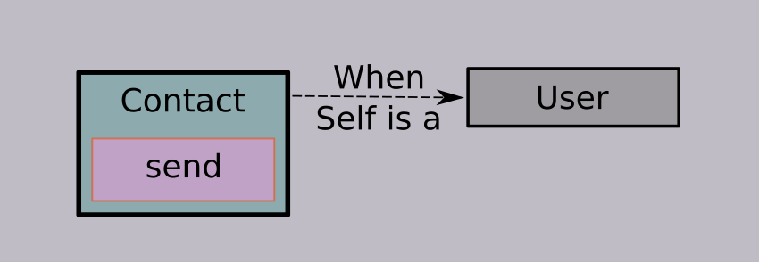extension Contact where Self:User {
func send(message: String) {
print("Say \(message) to \(name)")
}
}
send defined for a Contact when composed with a User
Protocol and mutual composition
Mutual Self constraints is allowed
when mutual inheritance is not possible!
⚗
The Chemistry

"Scalable Component Abstractions"
Martin Odersky & Matthias Zenger
Principle #1: Abstract type member
"Abstract type members provide a flexible way to abstract over concrete types of components."
Notions of Abstraction
Parameterization |
Abstract Members
|
Principle #2: Explicit self type
"Self type annotations allow one to attach a programmer-defined type to self"
Principle #3: Modular mixin composition
"Modular mixin composition provides a flexible way to compose components and component types"
Scalable Component Abstractions & Swift
User Repository design illustrated
Specific Protocol
struct User : Equatable {
let name: String
static func == (lhs:User, rhs:User) -> Bool { return lhs.name == rhs.name }
}
protocol UserRepository {
func create(_ user: User) -> Self
func delete(_ user: User) -> Self
}
Abstract Type Member & Self type
protocol InMemoryRepository {
associatedtype Element
var elements : [Element] { get }
func create(_ e: Element) -> Self
func delete(_ e: Element) -> Self
init(_ elements:[Element]) // Constructor specification in Protocols 😏
}
Abstract type member & upper bound
extension InMemoryRepository {
func create(_ e: Element) -> Self {
return type(of:self).init(self.elements + [e])
}
}
extension InMemoryRepository where Element:Equatable {
func delete(_ e: Element) -> Self {
return type(of:self).init(self.elements.filter{ $0 != e })
}
}
Abstract type member & upper bound
extension InMemoryRepository {
func create(_ e: Element) -> Self {
return ...
}
}
extension InMemoryRepository when Element:Equatable {
func delete(_ e: Element) -> Self {
return ...
}
}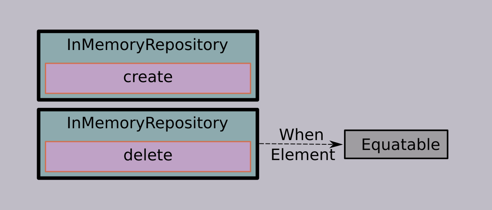
Specific Protocol & Self Type constraint
extension UserRepository
where Self:InMemoryRepository
{
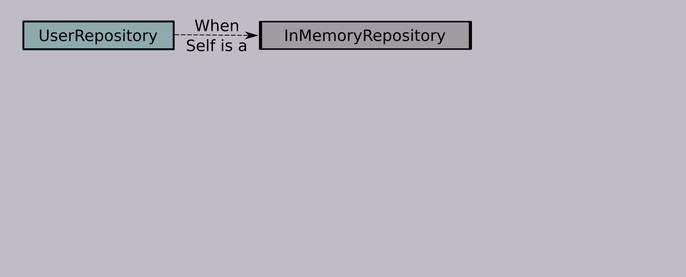
typealias Element = User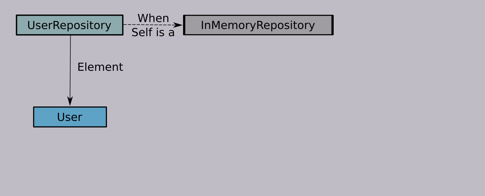
}
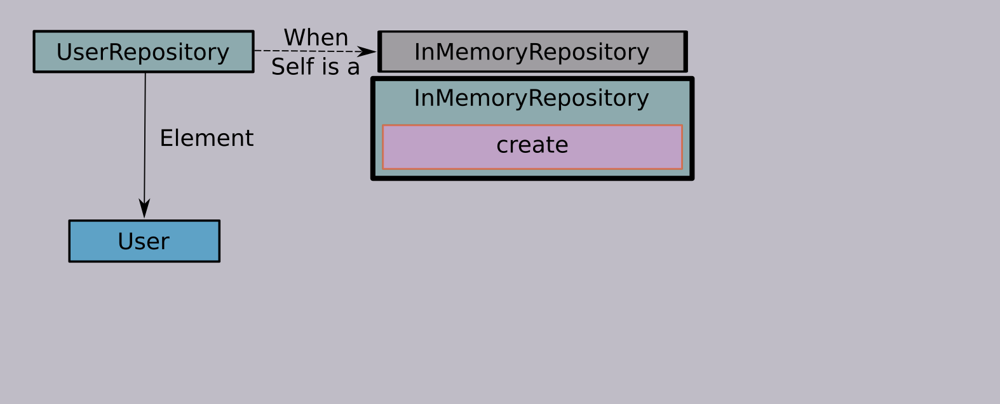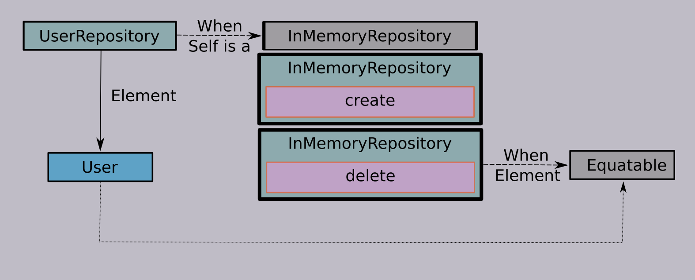Structure & Modular mixin composition
struct ConcreteUserRepository : UserRepository, InMemoryRepository {
let elements : [User]
init(_ elements:[User]) { self.elements = elements }
}
let r = ConcreteUserRepository([]).create(User(name:"Alice"))
.delete(User(name:"Alice"))
🎂
The Cake pattern
Alternative to Dependency Injection?
Not only!
The Cake pattern
Design Pattern based on
- Abstrat Type Member
- Modular Mixin Composition
- Explicit Self Type
The Cake pattern anatomy
| Service | Domains, API and SPI |
| Component | Services wrapper |
| Application | Components Assembly |
"Standardized" boilerplate for application design
The Cake pattern physiology
Services definition and implementation
Services definition
struct User {
let name: String
let password: String
}
protocol UserRepository {
func find(name: String) -> User?
}
protocol UserService {
func authenticate(name: String, password: String) -> Bool
}
A Static Repository Service implementation
struct StaticUserRepository : UserRepository {
let users = [ User(name:"Alice", password:"Wonderland") ]
func find(name: String) -> User? {
return self.users.filter{ $0.name == name }.first
}
}
A Default user Service implementation
struct DefaultUserService : UserService {
let userRepository : UserRepository
func authenticate(name: String, password: String) -> Bool {
return self.userRepository.find(name: name)
.map{ $0.password == password } ?? false
}
}
Quick Service overview
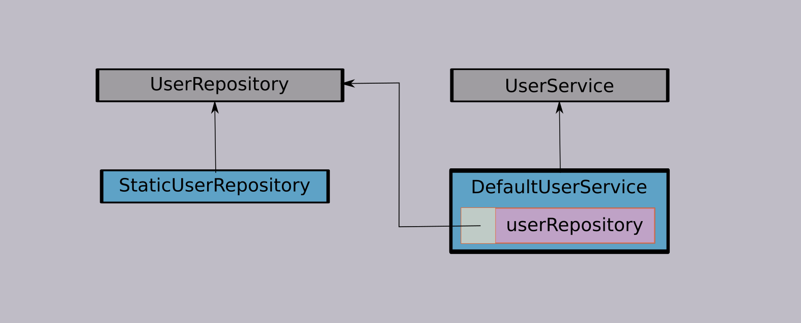The Cake pattern physiology
Components definition
User Repository component
protocol UserRepositoryComponent {
static var userRepository : UserRepository { get }
static func createUserRepository() -> UserRepository
}
extension UserRepositoryComponent {
static var userRepository : UserRepository {
return self.createUserRepository()
}
}
Simple service wrapper with abstract creator
User Service component
protocol UserServiceComponent {
static var userService : UserService { get }
static func createUserService() -> UserService
}
extension UserServiceComponent {
static var userService : UserService {
return self.createUserService()
}
}
Same wrapper ! Not real DRY
Quick Basic Components overview
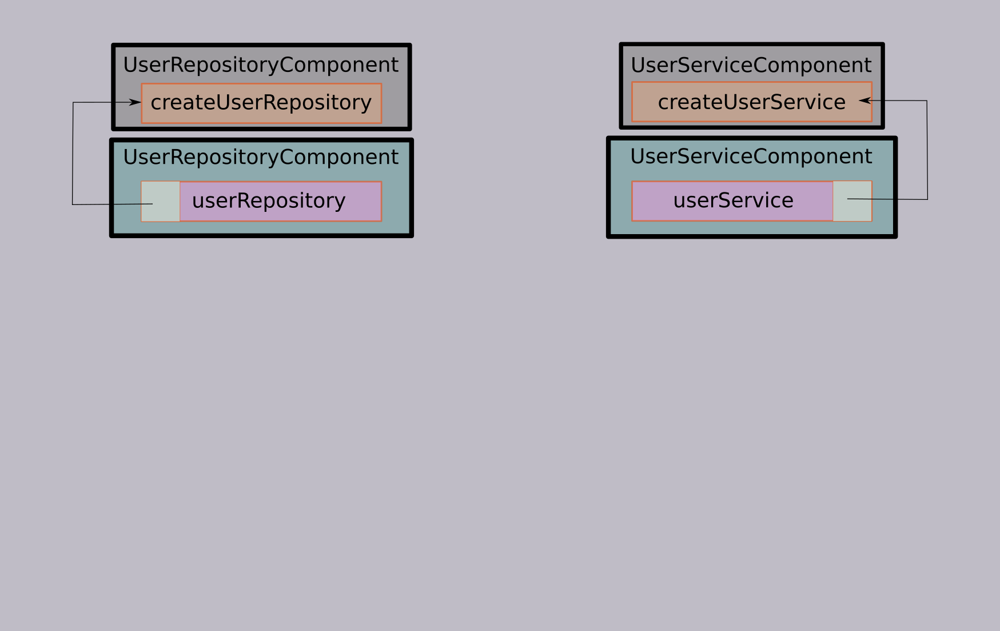Static Repository Component
protocol StaticUserRepositoryComponent : UserRepositoryComponent {}
extension StaticUserRepositoryComponent {
static func createUserRepository() -> UserRepository {
return StaticUserRepository()
}
}
Default User Service Component
protocol DefaultUserServiceComponent : UserServiceComponent {}
extension DefaultUserServiceComponent where Self:UserRepositoryComponent {
static func createUserService() -> UserService {
return DefaultUserService(userRepository: self.userRepository)
}
}
Self constraint used to retrieve the user repository
Quick Components overview
Quick Components overview
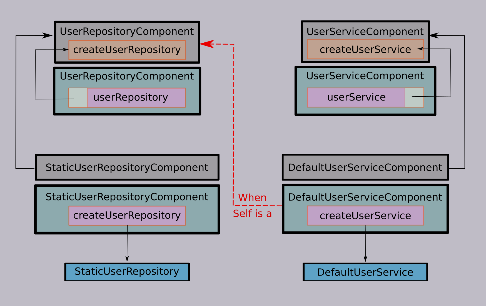The Cake pattern physiology
Application definition
Mixing components
struct Application: StaticUserRepositoryComponent,DefaultUserServiceComponent {
// Static variables userRepository and userService
// implicitely setup via variables initialization
}
Application.userService.authenticate(name:"Alice", password:"Wonderland")
📔
Revisiting the Recipe
Protocol Self constraint
The Twilight Zone
Basic Protocol Definition
protocol A { func a() -> String }
extension A { func a() -> String { return "a" } }
protocol B { func b() -> String }
extension B { func b() -> String { return "b" } }
protocol C { func c() -> String }
extension C { func c() -> String { return "c" } }
Self constrained extensions
extension C where Self:A {
func c() -> String { return "c with \(a())" }
}
extension C where Self:B {
func c() -> String { return "c with \(b())" }
}
extension C where Self:A&B {
func c() -> String { return "c with \(a()) and \(b())" }
}
Constraint based compositions
class DefaultC : C { func display() { print(c()) } }
DefaultC().display() // prints "c"
class DefaultAC : A, C { func display() { print(c()) } }
DefaultAC().display() // prints "c with a"
class DefaultBC : B, C { func display() { print(c()) } }
DefaultBC().display() // prints "c with b"
class DefaultABC : A, B, C { func display() { print(c()) } }
DefaultABC().display() // prints "c with a and b"
Self Constraint and Protocol
Constraint based programming style i.e.
behaviors aggregation driven by types composition
Revisiting the Cake Pattern
Mimic Spring "Autowired" Annotation
User Repository component
protocol Autowired {}
extension UserRepositoryComponent where Self:Autowired {
static var userRepository : UserRepository {
return self.createUserRepository()
}
}
extension UserServiceComponent where Self:Autowired {
static var userService : UserService {
return self.createUserService()
}
}
Mixing components
struct Application: StaticUserRepositoryComponent,DefaultUserServiceComponent {
static let userRepository = Application.createUserRepository()
static let userService = Application.createUserService()
}
struct Application: StaticUserRepositoryComponent,DefaultUserServiceComponent,
Autowired {
// Static variables implicitly linked
}
Protocol Oriented programming
Programming style
- Protocol Based Design
- Modular Mixin Composition
Protocol Oriented programming philosophy
"Replace a class hierarchy with
a protocol-oriented solution"
Revisiting the Cake Pattern
Protocol Oriented Programming applied
A Static Repository Service prototype
protocol StaticUserRepository : UserRepository {}
extension StaticUserRepository {
var users : [User] {
return [ User(name: "Alice", password: "Wonderland") ]
}
func find(name: String ) -> User? {
return self.users.filter{ $0.name == name }.first
}
}
A Default user Service protocol
protocol DefaultUserService : UserService {
var userRepository : UserRepository { get }
}
extension DefaultUserService {
func authenticate(name: String, password: String) -> Bool {
return userRepository.find(name:name)
.map{ $0.password == password }
?? false
}
}
Static Repository Component
struct StaticUserRepositoryStruct : StaticUserRepository {}
protocol StaticUserRepositoryComponent : UserRepositoryComponent {}
extension StaticUserRepositoryComponent {
static func createUserRepository() -> UserRepository {
return StaticUserRepositoryStruct()
}
}
Default User Service Component
struct DefaultUserServiceStruct : DefaultUserService {
let userRepository : UserRepository
}
protocol DefaultUserServiceComponent : UserServiceComponent {}
extension DefaultUserServiceComponent where Self:UserRepositoryComponent {
static func createUserService() -> UserService {
return DefaultUserServiceStruct(userRepository: self.userRepository)
}
}
Abstraction first programming style
"Cake Pattern: The Bakery from the Black Lagoon"
Daniel Spiewak